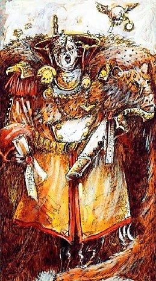

Planetary Governor
| Planetary Governor | |
|---|---|
| Imperial Commander of a world of the Imperium of Mankind | |
Seal of planetary governance, used on the warrants of Imperial Commanders Artwork © Games Workshop | |
| Style | Imperial Commander; Lord Governor; local titles |
| Appointer | The High Lords of Terra, through the Administratum; often hereditary in practice |
| Formation | M30, the Great Crusade[a] |
| Term length | For life, or at the High Lords' pleasure |
| Answers to | Lord Sector; Segmentum command; the Administratum |
| Obligations | The Imperial tithe; the Astra Militarum founding; the psyker tithe |
| Overseen by | The Adeptus Arbites; the Inquisition |
| Notable holders | Gerontius Helmawr (Necromunda); Herman von Strab (Armageddon); Marneus Calgar (Macragge) |
A Planetary Governor, formally styled Imperial Commander, is the ruler of a world of the Imperium of Mankind on behalf of the Emperor of Mankind. He has almost complete authority over the internal affairs of his world, its laws, its armies, its industry and its people, provided that he pays the world's tithes to the Administratum, raises regiments for the Astra Militarum when required, surrenders its psykers to the Black Ships, and keeps the world loyal to the Imperium and to the Imperial Cult.[1][2]
The office dates from the Great Crusade, when the Emperor's armies installed governors on worlds brought to compliance. Over the millennia most governorships have become hereditary in noble houses, whose succession the Administratum confirms. Governors of several worlds answer to a Lord Sector or sector governor, and the greatest governors rule whole subsectors or realms.[2]
The Imperium relies on the loyalty of its governors more than on any other single office, and their rebellions have caused some of its worst wars. A governor who fails in his duties may be removed by the Administratum, executed by the Adeptus Arbites or the Inquisition, or deposed by a Space Marine Chapter acting on their behalf.[1]
History
[edit]The Great Crusade
[edit]During the Great Crusade (c. 798.M30 – 000.M31) the expeditionary fleets brought tens of thousands of worlds into the Imperium. Where a world submitted, its own rulers were often confirmed in power and sworn to the Emperor; where it resisted, the crusade installed new rulers, frequently officers of the Imperial Army who remained when the fleets moved on. These rulers were called Imperial Commanders, and the Imperial Truth and the laws of Terra were imposed through them. The remembrancers recorded that some governors were installed within days of a world's compliance.[3]
The Horus Heresy and after
[edit]In the Horus Heresy (005–014.M31) many governors sided with the Warmaster, and whole sectors fell to rebellion. In the reforms that followed, under Roboute Guilliman as Lord Commander of the Imperium, the military and civil powers on each world were separated: governors were to keep a Planetary Defence Force but could not command the Astra Militarum regiments they raised, nor the ships of the Imperial Navy. The Adeptus Arbites were established on governors' worlds to enforce Imperial law above them.[1]
The Age of Apostasy and later millennia
[edit]The Age of Apostasy in M36 showed the danger of governors who obeyed a corrupt High Lord: many supported the Reign of Blood of Goge Vandire, and the Plague of Unbelief saw governors declare themselves gods. In later millennia governors' rebellions remained a constant threat. The secession of Overlord Herman von Strab of Armageddon, who betrayed his world to Ghazghkull Thraka in 941.M41, was one of the most damaging of the 41st millennium.[4][5]
The opening of the Great Rift in 999.M41 left the governors of the Imperium Nihilus cut off from Terra. Many have ruled alone since, raising their own forces and in some cases their own creeds, and the Indomitus Crusade has had to restore Imperial authority over worlds whose governors had become all but independent.[6]
Powers and obligations
[edit]An Imperial Commander's rights over his own world are close to absolute. He makes its laws, sets its taxes, commands its Planetary Defence Force and decides its religion within the limits of the Imperial Cult. The Imperium does not ask how he governs, only that he meet his obligations:[1]
- The tithe. The Administratum assigns every world a tithe grade, set by its population and industry, and the governor must pay it in goods, materials, soldiers or labour.
- The founding. When the Departmento Munitorum requires it, the governor must raise regiments for the Astra Militarum, trained and equipped at the world's cost.
- The psyker tithe. The governor must gather the world's psykers and surrender them to the Black Ships of the Adeptus Astra Telepathica.
- Defence. The governor must defend his world against invasion until relieved, and report any threat to Imperial authorities.
- Loyalty. He must permit the Imperial Cult and the presence of the Adepta, and suppress heresy and mutation.

Variant forms
[edit]- Hereditary rule. Most governorships pass within a noble house, such as House Helmawr, which has ruled Necromunda since about M34.
- Sector and subsector governors. A Lord Sector rules a sector of worlds, with the governors of its worlds below him; his authority is political and military, and he may raise armies from his sector in a crisis.
- Chapter rule. On worlds held by the Adeptus Astartes, the Chapter Master is usually recognised as Imperial Commander. The master of the Ultramarines is the Lord of Macragge and rules the realm of Ultramar.
- Ecclesiarchal and Mechanicus worlds. On shrine worlds a cardinal or other priest may rule, and on forge worlds the ruler is a Fabricator of the Adeptus Mechanicus, who answers to Mars, not to the Administratum.
- Military governors. Worlds under martial law, such as fortress worlds, may be governed by a military officer; Cadia was held in its last years by its Lord Castellan, Ursarkar Creed, until its fall in 999.M41.

Notable governors
[edit]| Name | World or realm | Title | Tenure | Known for |
|---|---|---|---|---|
| Gerontius Helmawr | Necromunda | Imperial Commander | since at least c. 700.M41 | Centuries-long reign by juvenat treatments |
| Herman von Strab | Armageddon | Overlord | to 941.M41 | Betrayal of Armageddon to the Orks in the Second War |
| Marius Hax | Calixis Sector | Lord Sector | late M41 | Ruler of the Calixis Sector |
| Marneus Calgar | Ultramar | Lord Macragge | before 745.M41 – present | Chapter Master ruling a realm |
| Lufgt Huron | Badab | Lord of Badab | c. 700–912.M41[b] | Withheld the tithe; the Badab War |
Timeline
[edit]| Date | Event |
|---|---|
| c. 798.M30 | First Imperial Commanders installed on worlds brought to compliance |
| 005–014.M31 | Many governors join the Horus Heresy |
| c. 021.M31 | Civil and military powers separated in the post-Heresy reforms |
| M36 | Governors support the Reign of Blood in the Age of Apostasy |
| 941.M41 | Herman von Strab betrays Armageddon |
| 999.M41 | The Great Rift cuts off the governors of the Imperium Nihilus |
See also
[edit]Notes
[edit]- ^ Imperial Commanders were installed on worlds brought to compliance from the first years of the Great Crusade, which began in c. 798.M30.
- ^ Estimated from Huron's acts as ruler recorded from 718.M41.
References
[edit]- ^ a b c d Warhammer 40,000: Rulebook (8th Edition), pg. 27. Games Workshop.
- ^ a b McNeill, Graham. Nightbringer (novel). Black Library.
- ^ McNeill, Graham. Courage and Honour (novel). Black Library.
- ^ Warhammer 40,000: Rulebook (7th Edition) (Digital Edition), pg. 286. Games Workshop.
- ^ Warhammer 40,000: Rulebook (4th Edition), pg. 101. Games Workshop.
- ^ Warhammer 40,000: Rogue Trader (1st Edition), pg. 171. Games Workshop.